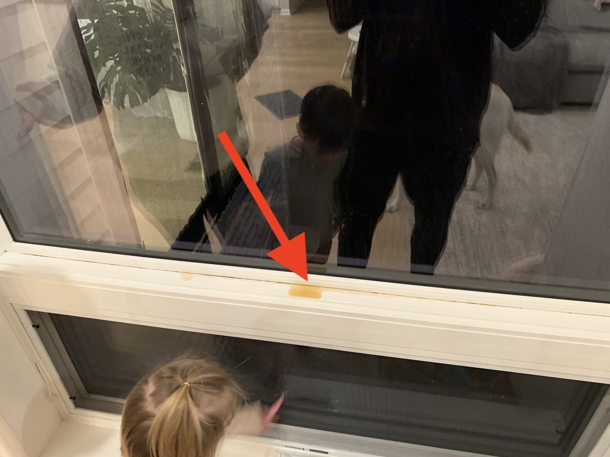
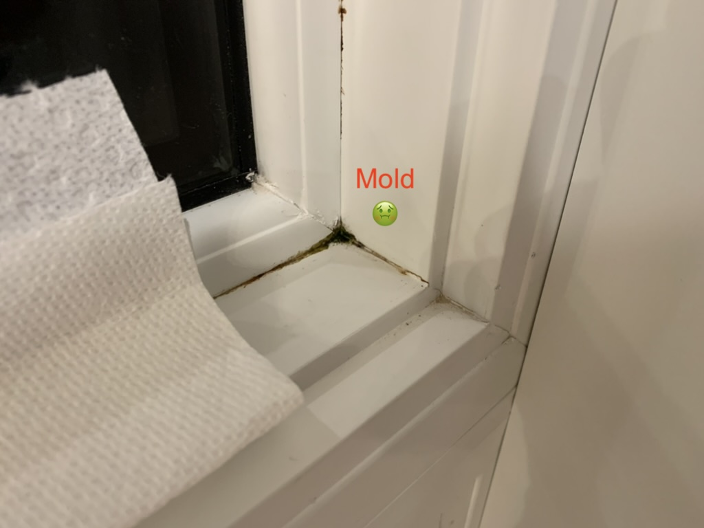
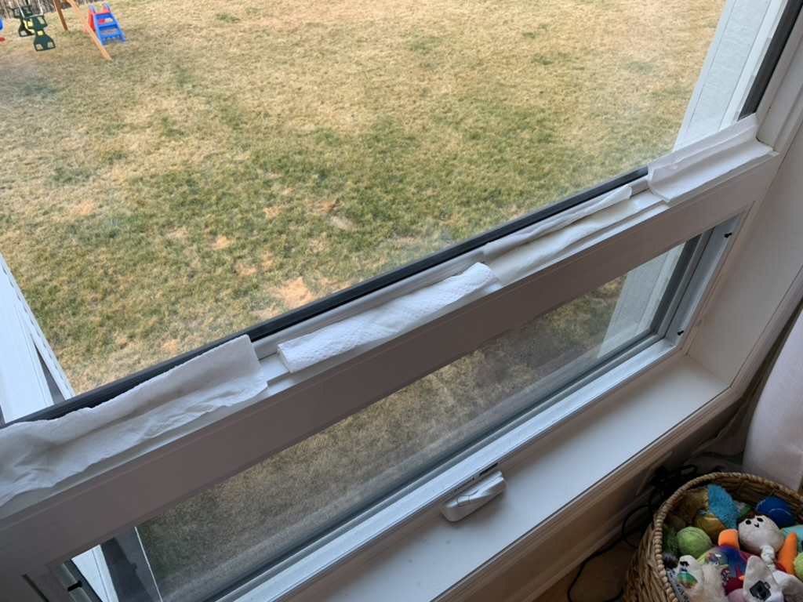
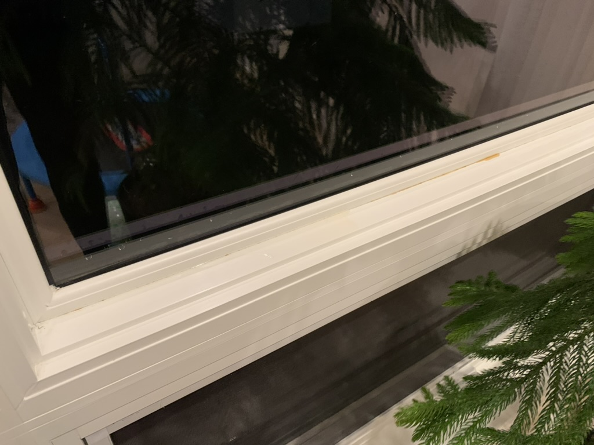
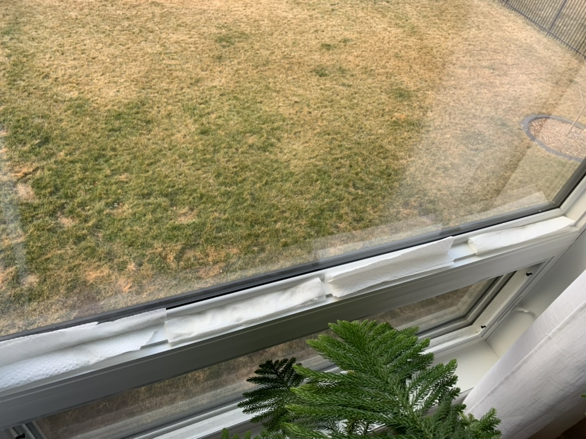

Window Leak | February, 2024
As we were getting ready for bed on rainy evening we couldn't help but notice wet floors and water quickly coming through our window seams as the rain poured down. At least is was just one window... right?
Wrong. It was not just one window, but two of our windows were presenting the same issue. After contacting M/I Homes they agreed to send someone out to investigate the issue. After investigation it was deemed that the glass was bad for these two windows and needed to be replaced. The glass was replaced.
M/I Homes corrected this issue at no charge to us. Having other windows leak is very worrisome for us.
    